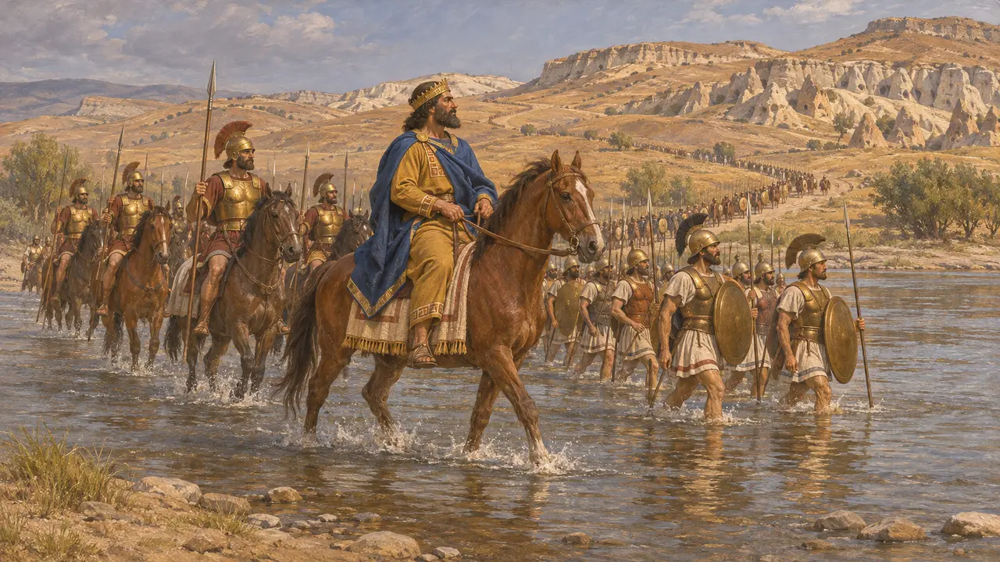
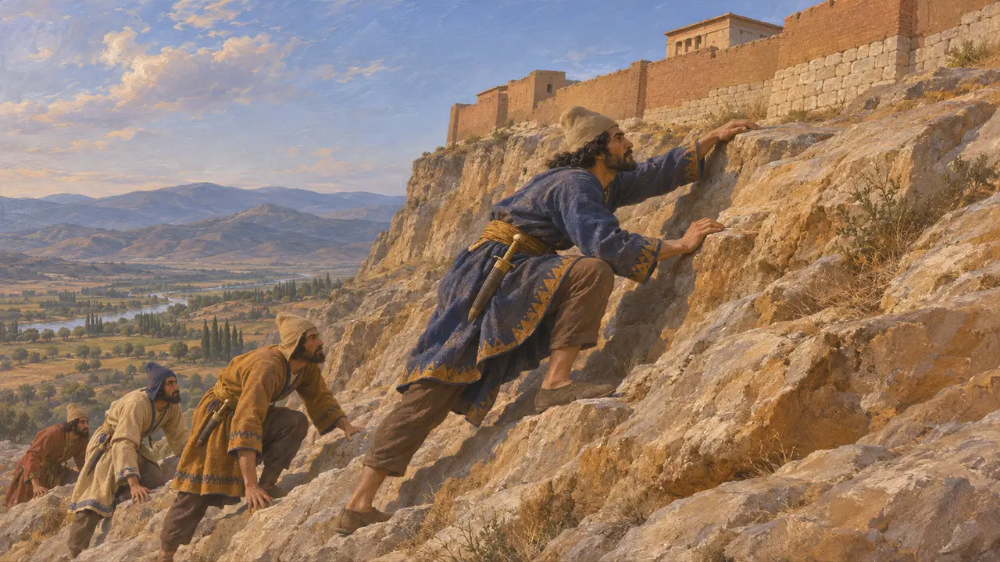
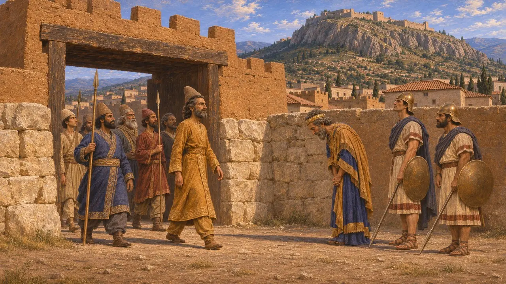
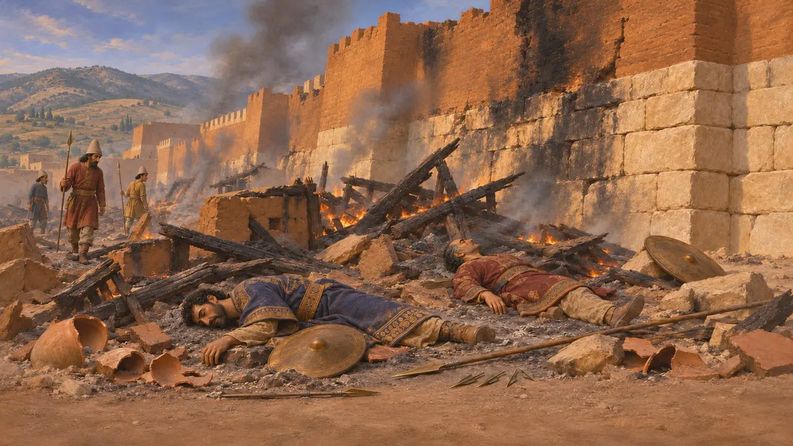
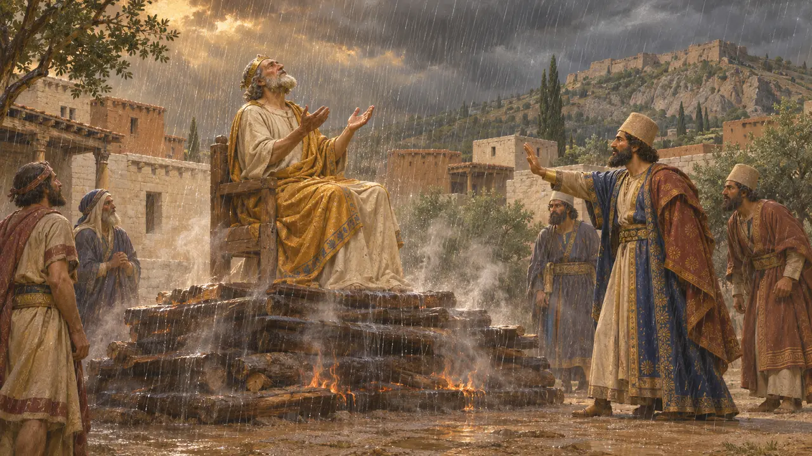

Encyclopédie › Batailles et événements

La chute de Sardes
La prise de la capitale lydienne par Cyrus sur Crésus, vers 547-546 av. J.-C.
Dans le jeu : Niveau 1 : Le Tombeau du fondateur
Crésus de Lydie franchit le fleuve Halys pour attaquer Cyrus et fut repoussé jusqu'à sa capitale, Sardes, où les Perses battirent sa cavalerie et prirent la citadelle. La chute de la Lydie donna à Cyrus l'Anatolie occidentale, ses richesses et la route vers les cités grecques de la côte égéenne, que ses généraux conquirent au cours des années suivantes.
Dans le jeu : Le jeu suit Hérodote : les chameaux font tourner bride à la cavalerie lydienne, un grimpeur prend la citadelle, et Crésus survit comme conseiller. Sa date ferme de 546 est la date traditionnelle, et Bacchylide donne à Crésus un autre destin.

Crésus franchit l'Halys
Récit antiqueHérodote dit que Crésus consulta Delphes et s'entendit répondre que, s'il faisait la guerre aux Perses, il détruirait un grand empire. Il franchit l'Halys pour entrer en Cappadoce et affronta Cyrus à Ptéria sans résultat net. Ne s'attendant à aucune campagne avant le printemps, il retourna à Sardes et renvoya chez eux ses troupes alliées pour l'hiver.
Herodotus 1.53, 1.75-77

Des chameaux dans la plaine et l'ascension du rocher
Récit antiqueHérodote raconte que Cyrus suivit à vive allure et affronta les Lydiens dans la plaine devant Sardes. Sur le conseil d'Harpage, il plaça en tête ses chameaux de bagages, et les chevaux lydiens, qui n'étaient pas habitués à leur odeur, firent demi-tour. Crésus fut assiégé dans la citadelle, et le quatorzième jour un soldat mardien nommé Hyroiadès gravit le versant escarpé que les défenseurs avaient laissé sans garde, et les Perses le suivirent à l'intérieur.
Herodotus 1.79-84

Quand cela se produisit
ContestéLa date de 546 repose sur une chronologie grecque plus tardive. La Chronique de Nabonide rapporte que, la neuvième année de Nabonide, vers 547, Cyrus marcha contre un pays et tua son roi, mais le nom de ce pays est endommagé. Les lectures anciennes y voyaient la Lydie ; plusieurs spécialistes doutent aujourd'hui de cette lecture, si bien que la chronique ne mentionne peut-être pas Sardes du tout, et la chute de la Lydie ne peut être située plus précisément que vers le milieu des années 540.
Nabonidus Chronicle, year 9; A. Kuhrt, The Persian Empire, 2007

La couche de destruction de Sardes
Dans les sourcesLes fouilleurs de Sardes ont découvert, contre le rempart lydien, un niveau de destruction par le feu du milieu du VIe siècle, avec des pointes de flèche, des armes et les restes d'hommes tués au combat. On le rattache généralement à la prise de la ville par les Perses. Ces vestiges montrent que la cité fut prise d'assaut avec violence, quel qu'ait été le sort de son roi.
Archaeological Exploration of Sardis, excavation reports

Crésus sur le bûcher
Légende tardiveHérodote dit que Cyrus plaça Crésus sur un bûcher et se laissa fléchir lorsque Crésus invoqua le nom de Solon, qui l'avait averti de ne tenir aucun homme pour heureux avant sa fin. Comme les flammes refusaient de mourir, Crésus pria Apollon et une pluie soudaine les éteignit. Bacchylide, écrivant vers 468, fait monter Crésus sur le bûcher de son plein gré jusqu'à ce qu'Apollon l'emporte, et un vase athénien le montre trônant dessus. Ce sont deux récits moraux, et non des comptes rendus des faits.
Herodotus 1.86-87; Bacchylides, Ode 3
Sources
- Herodotus 1.53-91, 1.208
- Nabonidus Chronicle (ABC 7)
- Bacchylides, Ode 3
- A. Kuhrt, The Persian Empire: A Corpus of Sources from the Achaemenid Period, 2007
- P. Briant, From Cyrus to Alexander, 2002
- Archaeological Exploration of Sardis, excavation reports